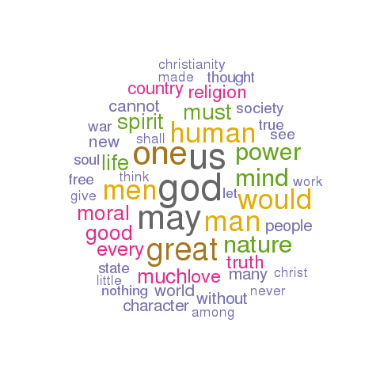

channing
This page describes a corpus named channing as created by a tool named the HTRC Workset Browser.
General statistics
An analysis of the corpus's metadata provides an overview of what and how many things it contains, when things were published, and the sizes of its items:
- Number of items - 36
- Publication date range - 1810 to 1903 (histogram : boxplot)
- Sizes in pages - 20 to 636 (histogram : boxplot)
- Total number of pages - 5001
- Average number of pages per item - 138
Possible correlations between numeric characteristics of records in the catalog can be illustrated through a matrix of scatter plots. As you would expect, there is almost always a correlation between pages and number of words. Are others exist? For more detail, browse the catalog.
Notes on word usage
By counting and tabulating the words in each item of the corpus, it is possible to measure additional characteristics:
Perusing the list of all words in the corpus (and their frequencies) as well as all unique words can prove to be quite insightful. Are there one or more words in these lists connoting an idea of interest to you, and if so, then to what degree do these words occur in the corpus?
To begin to see how words of your choosing occur in specific items, search the collection.
Through the creation of locally defined "dictionaries" or "lexicons", it is possible to count and tabulate how specific sets of words are used across a corpus. This particular corpus employs three such dictionaries -- sets of: 1) "big" names, 2) "great" ideas, and 3) colors. Their frequencies are listed below:
The distribution of words (histograms and boxplots) and the frequency of words (wordclouds), and how these frequencies "cluster" together can be illustrated:
Items of interest
Based on the information above, the following items (and their associated links) are of possible interest:
- Shortest item (20 p.) - A sermon, preached in Boston, August 20, 1812, the day of humiliation and prayer, appointed by the President of the United States, in consequence of the declaration of war against Great Britain. Published at the request of the hearers. (HathiTrust : WorldCat : plain text)
- Longest item (636 p.) - Discourses, reviews, and miscellanies / by William Ellery Channing. (HathiTrust : WorldCat : plain text)
- Oldest item (1810) - A sermon, preached in Boston, April 5, 1810, the day of the public fast / by William Ellery Channing. (HathiTrust : WorldCat : plain text)
- Most recent (1903) - Discourses on war, by William Ellery Channing, with an introduction by Edwin D. Mead. (HathiTrust : WorldCat : plain text)
- Most thoughtful item - Dr. Channing's note-book; passages from the unpublished manuscripts of William Ellery Channing, selected by his granddaughter, Grace Ellery Channing. (HathiTrust : WorldCat : plain text)
- Least thoughtful item - Correspondence of William Ellery Channing and Lucy Aikin : from 1826-1842 / edited by Anna Letitia Le Breton. (HathiTrust : WorldCat : plain text)
- Biggest name dropper - Remarks on the character and writings of John Milton; occasioned by the publication of his lately discovered T̀reatise on Christian doctrine.' [By W.E. Channing, LL. D.] (HathiTrust : WorldCat : plain text)
- Fewest quotations - Memoir of John Gallison, Esq. From the Christian disciple. (HathiTrust : WorldCat : plain text)
- Most colorful - The anniversary of emancipation in the British West Indies. (HathiTrust : WorldCat : plain text)
- Ugliest - Memoir of John Gallison, Esq. From the Christian disciple. (HathiTrust : WorldCat : plain text)
Eric Lease Morgan, Librarian
University of Notre Dame
{kind=link}
{kind=link}
{kind=link}
{kind=link}
{kind=link}
{kind=link}
{kind=link}
{kind=link}
{kind=link}
{kind=link}
{kind=link}
{kind=link}
{kind=link}
{kind=link}
{kind=link}
{kind=link}
{kind=link}
{kind=link}
{kind=link}
{kind=link}
{kind=link}